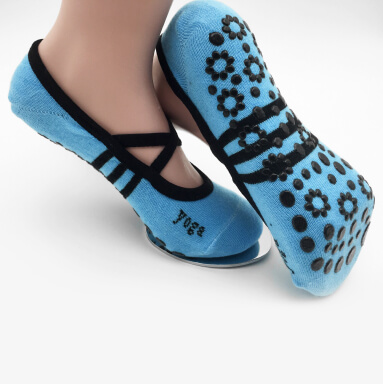
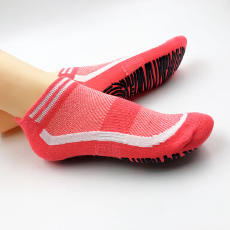
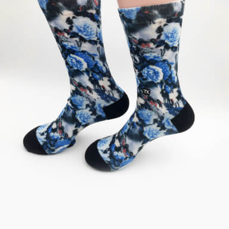
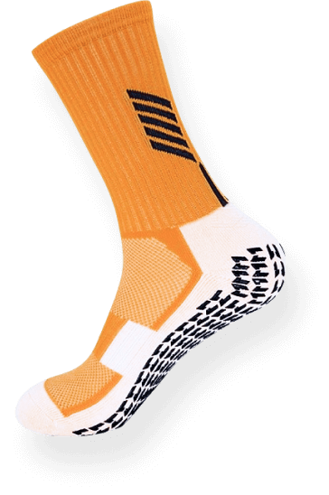

Что мы предлагаем купить?

Носки для йоги

Носки для прыжков на батуте

Носки для спорта
Чем отличаются нескользящие носки от обычных?
1
В меру эластичная резинка medium не слишком тугая и не слишком слабая, поэтому носок не спадает и не сдавливает вены — золотая середина
2
Плотная анатомическая пятка обтягивает стопу, создавая комфорт при носке изделия
3
В меру эластичная резинка medium не слишком тугая и не слишком слабая, поэтому носок не спадает и не сдавливает вены — золотая середина
4
След имеет плотную структуру за счет тройной вязки, поэтому изделие практически не стирается при повышенных спортивных нагрузках

Где еще применить прорезиненные носки?
В любом месте, где есть скользкие полы и нет возможности использовать обувь